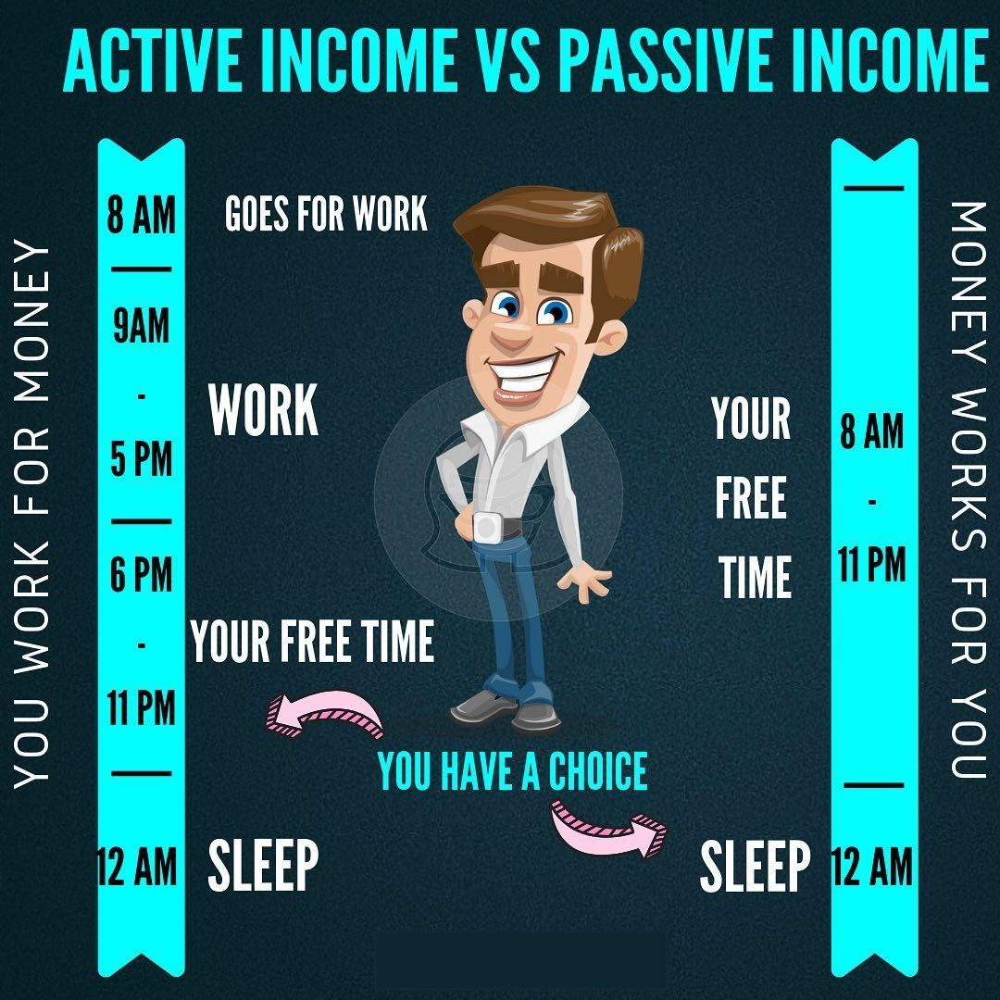

Chào mọi người!
Trong bài viết trước mình có chia sẻ về yếu tố nền tảng quan trọng nhất để bắt đầu đến với tự do tài chính. Và yếu tố tiếp theo cũng rất quan trọng trong hành trình này. Đó là tạo nguồn thu nhập thụ động.
Để bắt đầu, mình xin chia sẻ lại một câu chuyện mà chắc nhiều bạn cũng đã nghe nhưng mình nghĩ không thể không phù hợp hơn khi suy nghĩ về thu nhập thụ động.
Câu chuyện bắt đầu từ ước mơ có một cuộc sống tốt đẹp hơn cho bản thân của hai người bạn. Họ không ngại khó khăn và luôn luôn tìm kiếm những cơ hội để thực hiện những ước mơ của mình.
Và cuối cùng thì cơ hội đã đến. Người đứng đầu ngôi làng quyết định thuê hai người xách nước từ con suối trên đỉnh ngọn núi cao để về cung cấp cho làng. Pablo & Bruno hào hứng bắt tay ngay vào công việc hàng ngày từ sáng đến tối, họ cùng nhau xách nước từ con suối về làng. Họ làm việc chăm chỉ hàng ngày, buổi tối họ trở về nhà với tiền công của ngày hôm đó.
Bruno thật hài lòng với công việc và số tiền mà mình kiếm được. Anh tin chắc rằng với công việc này anh có thể đạt được những gì anh mong muốn.Để tăng thêm thu nhập của mình, anh sẽ dùng những xô nước lớn hơn cho mỗi chuyến. Sau đó với nguồn thu nhập lớn hơn anh có thể mua được một con bò và ngôi nhà mà anh ta mơ ước.
Pablo thì không hài lòng với công việc của mình. Sau một ngày làm việc, anh cảm thấy rất mệt mỏi và đau tay, kiệt sức. Dần dần sức khỏe sẽ không còn đủ để làm như vậy mãi. Và vì thế anh ta bắt đầu nghĩ ra cách khác để kiếm được nhiều tiền hơn, mất ít công sức hơn. Và một sáng kiến đã lóe lên trong đầu của Pablo.
Anh sẽ xây dựng một hệ thống ống dẫn nước từ con suối trên đỉnh núi cao về cho làng. Với hệ thống này, anh có thể mang được nhiều nước hơn về cho làng mà không cần phải đi xách nước hàng ngày. Với tràn đầy sự hứng khởi với sự sáng kiến của mình và bắt tay ngay vào công việc.
Pablo chia sẻ sáng kiến này với Bruno và mời Bruno chung sức để xây dựng một hệ thống. Bruno nghĩ rằng ý tưởng này thật điền rồ. Tất cả những gì Bruno có thể nghĩ đến là làm sao để kiếm được nhiều tiền và mua được nhiều thứ hơn. Bruno nghĩ rằng xây dựng một hệ thống sẽ làm ảnh hưởng đến công việc của anh và sẽ khiến anh chậm đi đến mục đích của mình.
Ngược lại, Bruno vẫn dùng những xô nước lớn hơn và đi lại nhiều lần hơn để xách nước.
Pablo đành phải thực hiện kế hoạch một mình. Hàng ngày anh vẫn đi xách nước với số lượng vừa phải để giữ sức. Anh dành sức lực còn lại để ngày thứ 7 và Chủ nhật xây dựng đường ống. Nhân dân trong làng cho rằng Pablo đang làm một công việc “điên rồ” và cười nhạo anh. Nhưng Pablo đã bỏ qua những lời chế nhạo đó và kiên trì kế hoạch của mình đã vạch ra.
Bruno với sức khỏe vượt trội hơn đã xách những thùng nước to hơn và được nhiều tiền hơn. Anh đã có tiền để mua nhà và một con bò. Sau giờ đi làm anh thường đến các quán bar để uống bia, xả hơi.
Nhưng thời gian trôi đi, Bruno cảm thấy sức lực ngày càng yếu hơn và mệt mỏi hơn. Anh buộc phải xách những thùng nước nhỏ hơn trước, vì vậy mà thu nhập cũng giảm dần theo thời gian. Cơ thể Bruno già đi trông thấy vì phải làm thêm nhiều giờ và tăng khối lượng công việc.
Còn Pablo thì sau 2 năm kiên trì kế hoạch của mình đã xây dựng xong đường ống dẫn nước từ trên núi về làng. Khi đường ống được xây dựng xong, Pablo không phải đi gánh nước nữa mà ngồi tại nhà thu tiền nước của cả làng. Tiền chảy về túi của anh ngay cả khi anh đang ngủ hoặc đi chơi.
Qua câu chuyện này, mọi người có suy ngẫm gì về nó? Với mình thì mình có vài suy nghĩ mà mình muốn chia sẻ cùng mọi người.
Thời gian, sức khỏe của chúng ta là hữu hạn
Dù bạn có được trời phú cho cơ thể khỏe đến mấy, tuổi thọ dài đến mấy thì thời gian, sức khỏe của mỗi người đều là hữu hạn. Mỗi người đến với cuộc sống này đều như một chiếc bình chứa, tùy theo cách dùng của mỗi người mà bình chứa đấy sẽ cạn nhanh hay chậm.

Như trong công chuyện, Bruno đến một ngưỡng nào đó sức khỏe, khả năng sẽ giảm dần đi và không thể kiếm tiền được như những ngày còn khỏe mạnh nữa.
Nếu cứ làm việc sử dụng sức lao động, thời gian để đổi lấy tiền, đến một lúc nào đó chúng ta cũng không còn sức lao động để đánh đổi nữa.
Ở đây mình không nói đến cách nào đúng, cách nào sai, vì đó là lựa chọn cuộc sống của mỗi người. Mà mình chỉ muốn nhắc đến thực thế rằng điều này tương lai sẽ xảy ra. Vì nhiều bạn, anh chị vẫn đang ở tuổi sung sức lao động có thể sẽ quên mất điều này.
Cơ hội đến, nhưng cách nắm bắt của mỗi người là khác nhau
Trong cuộc sống sẽ luôn có những người than thở rằng cơ hội không đến với họ, rằng người này người kia giàu có là do may mắn, do có cơ hôi.
Điều này hoàn toàn đúng! Thành công sẽ cần đến yếu tố may mắn, cơ hội. Nhưng cơ hội đến, không phải ai cũng nắm bắt được nó. Cũng như cách Pablo và Bruno cùng có cơ hội tiếp xúc với cơ hội nhưng cách nắm bắt là khác nhau.
Mình gặp nhiều người quen nói với mình những điều như: biết Bitcoin từ thời Bitcoin có 1k hay biết Forex từ thời học đại học. Thằng bạn rủ vào Bitcoin lúc đấy giá như vào thì giờ giàu rồi, giá … rất nhiều điều giá như nữa. Và đến bây giờ, thị trường trải qua vài chu kỳ thì họ vẫn ngồi đó và nói những điều giá như như vậy. Chắc ai cũng sẽ có những người quen như thế.
Giống như Bruno, đa phần suy nghĩ của đại đa số làm thế nào có đủ tiền sống qua ngày, hết tuần này hoặc qua tháng này, nếu có nguồn thu nhập tốt thì sẽ tiêu xài hết, thậm chí là tiêu trước thay vì đầu tư cho tương lai.
Số ít thì sẽ nghĩ dài hạn hơn như Pablo cảm thấy không hài lòng với công việc hiện tại, Mục tiêu của Pablo là hướng đến cuộc sống tốt hơn, tự do hơn, thoải mái hơn.
Pablo sẵn sàng làm việc vất vả hơn, bởi vì anh ta biết rằng nếu muốn có thứ chưa từng có, anh ta phải sẵn sàng làm những việc chưa từng làm.
Pablo quyết định kế hoạch xây dựng đường ống…một mình. Anh ta hiểu rằng, đó không phải là điều dễ dàng và có thể sẽ mất rất nhiều thời gian để hoàn thành.
Nhưng anh ta vẫn tin tưởng vào kế hoạch của mình. Hàng ngày, anh ta vẫn đi xách nước như trước, nhưng vào những ngày cuối tuần và những lúc rảnh rỗi anh ta làm việc cật lực để xây dựng hệ thống của mình. Trước sự cười nhạo của những người trong làng.
Có người sẽ gọi đây là sự đánh đổi, điều này mang một màu sắc gì đó hơi tiêu cực, với bản thân mình đó chỉ đơn giản là sự chọn của bản thân, và mình tận hưởng hành trình đó.
Nguồn thu nhập chủ động bị giới hạn
Thu nhập chủ động nghĩa là bạn phải đánh đổi thời gian & sức lao động thì bạn mới được trả tiền, nếu bạn không bỏ thời gian & sức lao động thì không được trả lương.
Đó có thể là thu nhập từ sếp trả cho bạn, hoặc từ những công việc làm tư. Thu nhập chủ động thường bị giới hạn bởi vì nó phụ thuộc vào hai yếu tố: thời gian & sức lao động, mà hai yếu tố này đều bị giới hạn.
Mỗi người chỉ có 24 giờ mỗi ngày, bạn không thể làm thêm 24 giờ mỗi ngày và sức khỏe của bạn cũng không cho phép bạn làm điều đó một cách liên tục. Khi lớn tuổi, sức khỏe yếu đi thì nguồn thu nhập của bạn cũng sẽ giảm đi.
Đó là nguồn thu nhập của Bruno
Nguồn thu nhập của Pablo là nguồn thu nhập thụ động và không bị giới hạn
Thu nhập thụ động là nguồn thu nhập sau khi bạn xây dựng một hệ thống làm việc hoàn chỉnh thì nó sẽ tự động vận hành mà không đòi hỏi bạn bỏ thời gian & công sức ra nhiều nữa nhưng thu nhập của bạn vẫn đến một cách liên tục.
Nếu hệ thống của bạn xây dựng ngày càng mở rộng & phát triển thì nguồn thu nhập của bạn sẽ ngày càng gia tăng & hoàn toàn không bị giới hạn.
Nguồn thu nhập thụ động sẽ giúp bạn thực hiện ước mơ, tự do làm những điều mình muốn, đi du lịch, dành thời gian cho gia đình, giúp đỡ người khác…

Thu nhập thụ động cần nhiều thời gian và công sức
Tỷ phú Lý Gia Thành, một trong những người giàu nhất Châu Á, từng có tuổi thơ nghèo khó, phải làm đủ ngành nghề để mưu sinh, ông đã đưa ra lời khuyên “Công việc từ 7 giờ sáng đến 5 giờ chiều là công việc chỉ đủ để nuôi sống bạn, công việc từ 19 giờ đến 22 giờ mới là công việc giúp bạn làm giàu”.
Bạn cần có một công việc để kiếm sống, bạn vẫn phải đi làm cho ai đó để có tiền chi tiêu cho sinh hoạt phí, tiền nhà, tiền điện, thẻ tín dụng,…Tuy nhiên, sau giờ làm thay vì nhậu nhẹt hoặc lân la quán xá thì bạn dành thời gian đó để xây dựng nguồn thu nhập thụ động cho mình.
Dần dần, khi nguồn thu nhập thụ động của bạn sẽ hình thành & hoàn thiện thì lúc đó bạn sẽ bắt đầu có được nguồn thu nhập thứ 2. Khi nguồn thu nhập đủ lớn, đủ đảm bảo cho các chi phí cơ bản, lúc đó tùy bạn có thể nghỉ công việc công ty mà bạn đang làm và dành toàn bộ thời gian cho chính bản thân mình. Hoặc tiếp tục làm công việc mình đang làm nhưng với tâm thế hoàn toàn khác.
Nếu chỉ nhìn vào toàn những bên trên thì chắc chắn ai cũng mong muốn có nguồn thu nhập thụ động. Tuy nhiên, lý do khiến không phải ai cũng đạt được điều này bởi đạt được nó không đơn giản.
Hầu hết, các hình thức để có nguồn thu nhập thụ động thời gian đầu đều mất rất nhiều công sức, thời gian và sự kiên trì để có được. Nên không phải ai cũng đi được đến cuối hành trinh.
Cũng tương tự như Pablo khi mới bắt đầu, việc phải cố gắng mỗi ngày mà chưa thấy được kết quả rõ ràng ngay mà nhìn bạn bè tăng thu nhập, tiêu xài, đi chơi, du lịch. Có thể sẽ khiến bất cứ ai bỏ cuộc giữa chừng.
Vài kinh nghiệm để bạn vững tin trên hành trình
Xác định tâm lý trước
Khi bắt đầu tìm kiểm nguồn thu nhập thụ động bạn hãy xác định rõ tư tưởng trường rằng đây là một mục tiêu lâu dài, không thể đạt được một sớm một chiều được.
Cái khó nhất của việc tạo thu nhập thụ động là sự kiên nhẫn và một tầm nhìn dài hạn. Dù tài liệu, hướng dẫn kiếm tiền thụ động rất nhiều, ai cũng biết cần phải làm gì rồi. Nhưng đa phần bỏ cuộc giữa chừng khi chưa đủ tới độ “chín” để mang lại hiệu quả cao, những gì mà lãi kép mang lại.
Xác định mình cố gắng trong vài năm tới để cho một tương lai dài sau này tốt hơn sẽ giúp bạn có động lực và tránh tâm lý nóng vội hơn. Vài năm nghe thì dài nhưng nó trôi qua rất nhanh thôi, nhưng nếu không làm thì vài năm tới mọi thứ vẫn sẽ như vậy, vẫn vòng lặp của cuộc sống như cũ.
Tận hưởng cuộc hành trình
Có một câu nói mà mình rất thích và luôn luôn nhắc đi nhắc lại cho bản thân
Thành công là một hành trình, không phải là đích đến!
Khi leo hay chinh phục một ngon núi, ngon đèo. Nếu chỉ tập trung hoàn toàn vào việc lênh đến đỉnh thì chúng ta luôn sẽ gặp cảm giác mệt mỏi, chán nản trên đường leo lên. Thay vì điều này, ta có thể thoải mái tâm lý, tận hưởng cảnh vật xung quanh, không khí trong lành của rừng cây. Như vậy, cảm giác đường lên đến đỉnh cũng nhanh hơn, và ta có thể tận hưởng nhiều thứ hơn. Tất cả chỉ là tâm lý của bản thân mà thôi.
Đa dạng nguồn thu nhập chủ động và thụ động
Dù nguồn thu nhập thụ động mang rất nhiều lợi ích, nhưng không có nghĩa là chúng ta tập trung hết vào nguồn thu nhập thụ động mà bỏ quên thu nhập chủ động. Nguồn thu nhập chủ động cũng rất cần để chúng ta có thể nuôi sống và kiến tạo nguồn thụ nhập thụ động.
Nên nếu bạn hỏi mình, có nên nghỉ việc để tập trung vào duy nhất đầu tư hay không? Nên trade hay nên đầu tư?.. Thì câu trả lời mình luôn là nên kết hợp vì mỗi nguồn thu nhập đều có cái hay và có sự bổ sung tương hỗ cho nhau.
Ngay cả thu nhập chủ động hay thu nhập thụ động cũng chia ra làm các nguồn thu nhập khác nhau, lợi nhuận, rủi ro khác nhau. Chúng ta cũng có thể chia nhỏ ra.
Điều này sẽ khiến bản thân không bị phụ thuộc hoàn toàn vào bắt cứ nguồn thu nhập hay thị trường nào. Tuy nhiên, trước khi có sự đa dạng chúng ta cũng cần tập trung vào 1,2 nguồn thu nhập nào đó cho chuyên sâu trước để tránh cưỡi ngựa xem hoa.
Xây dựng môi trường tốt cho bản thân
Để có thể dễ dàng hơn trong việc xây dựng nguồn thu nhập thụ động, tư do tài chính, mọi người cần tạo cho bản thân một môi trường tốt để hỗ trợ. Rất khó để không bỏ cuộc nếu xung quanh đều là những người bạn luôn rủ đi nhậu nhẹt, ăn chơi, cười cợt với những ước mơ của bạn… Ý mình là không phải hoàn toàn không chơi với những người bạn như vậy mà chúng ta nên hạn chế tiếp xúc hơn để tránh bị nhiễm.
Ngoài ra, tạo dựng mội trường có thể là đọc sách, follow các kênh youtube hay truyền thông điệp tích cực, tạo động lực,…
Khi tạo cho mình một môi trường như vậy, dần dần bạn sẽ thấy việc tiết kiệm, xây dựng nguồn thu nhập thụ động là hết sức thoải mái và thư giãn.
Tổng kết
Có rất nhiều cách để tạo nguồn thụ nhập thu động, tùy theo khả năng của mỗi người mọi người có thể chọn cách tạo nguồn thu nhập thụ động trong công việc hiện tại của mình để có thể tận dụng kiến thức, kinh nghiệm của bản thân.
Mình nghĩ trong ngành nào cũng sẽ có cách tạo nguồn thu nhập thụ động. Lý thuyết là như vậy, từ bài viết sau mình sẽ đi vào thực hành chia sẻ các cách để tạo nguồn thu nhập thụ động trong đầu tư, và đặc biệt là ở thị trường Crypto một cách an toàn mà ai cũng có thể làm được.